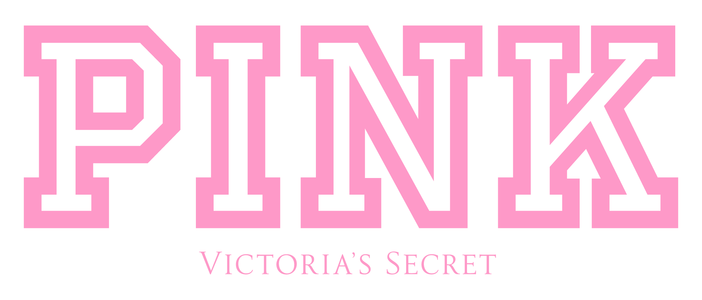
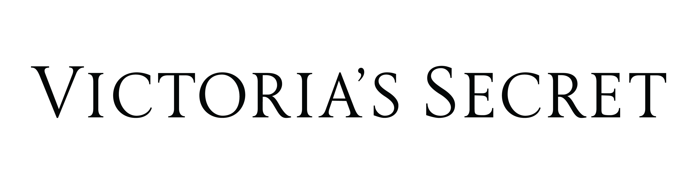

빅토리아 시크릿 Victoria's Secret
빅토리아 시크릿은 속옷을 기능적 제품이 아니라 무대화된 판타지와 자기표현의 이미지로 포장한 브랜드다. 브랜드는 제품보다 쇼, 모델, 시각적 연출을 통해 소비자가 상상하는 매력의 장면을 판매해 왔다.
최종 업데이트

빅토리아 시크릿은 어떤 브랜드인가
빅토리아 시크릿은 속옷을 기능적 제품이 아니라 무대화된 판타지와 자기표현의 이미지로 포장한 브랜드다. 브랜드는 제품보다 쇼, 모델, 시각적 연출을 통해 소비자가 상상하는 매력의 장면을 판매해 왔다.
빅토리아 시크릿은 어떻게 봐야 할까
빅토리아 시크릿은 속옷을 기능적 제품이 아니라 무대화된 판타지와 자기표현의 이미지로 포장한 브랜드다. 브랜드는 제품보다 쇼, 모델, 시각적 연출을 통해 소비자가 상상하는 매력의 장면을 판매해 왔다.
빅토리아 시크릿은 어떻게 시작되고 성장했나
빅토리아 시크릿(Victoria's Secret)은 1977년에 시작된 미국의 란제리 브랜드이다. 남성이 여성 속옷을 편히 살 수 없다는 불편을 해소하기 위해 설립된 빅토리아 시크릿은 트렌드와 고객에 대한 이해를 바탕으로 브랜드의 성장과 매장의 확대를 이어오고 있다.
빅토리아 시크릿의 브랜드 아이덴티티는 무엇인가
빅토리아 시크릿의 '빅토리아'는 섹시하고 당당한 도시 여성을 대표한다. 빅토리아 시크릿은 패션쇼와 엔젤스 활동을 통해 당당하고 매력적인 도시 여성의 이미지를 선보이며 빅토리아 시크릿만의 차별화된 브랜드 아이덴티티를 구축하고 있다.
빅토리아 시크릿은 지금 어떤 상태인가
빅토리아 시크릿 연혁 — 주요 사건은 언제였나
빅토리아 시크릿 로고는 어떻게 변해왔나
대표 로고대표 브랜드 마크
BI/CI 아카이브보관 이미지 2
BI/CI 아카이브 5보관 이미지 5자주 묻는 질문
빅토리아 시크릿의 브랜드 아이덴티티는 무엇인가요?
빅토리아 시크릿의 '빅토리아'는 섹시하고 당당한 도시 여성을 대표한다.
빅토리아 시크릿는 어느 기업이 소유하고 있나요?
국가: 미국; 본사: 레이놀즈버그; 상위/소유 조직: L 브랜즈; 산업: 의류산업
출처와 검증
브랜드명은 한글과 원어를 함께 표기하되 데이터에 없는 표기는 만들지 않습니다. 기원 국가·설립연도는 검수된 정의문에서 확인된 값을 우선하고, 없을 때만 공식 웹사이트 URL이 일치하는 위키데이터 개체의 값을 씁니다.